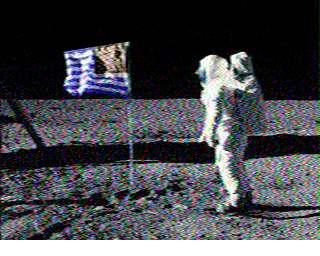

音声ファイル LunaGuesser.wav が与えられ、どこから送られたものかを要求された。
音声を聴いてみるとピロピロ音であり、以前何かの問題で出ていた Slow-scan television っぽいと感じられた。
そこで、音声を
An audio file LunaGuesser.wav was given, and we are asked where the message was sent from.
Listening to the audio, I found it sounds like Slow-scan television I encountered in some past challenge.
I feeded the sounds to

画像は月面に立てられた旗のようだったので、「moon american flag place」でググると、以下のページが見つかった。
The image looked like a flag on the moon, so I googled "moon american flag place" and found this page:
Lunar Flag Assembly - Wikipedia
このページには今回得られたのと似た画像が載っており、さらに以下のページへのリンクがあった。
This page had an image that is similar to the result, and a link to this page:
このページの Apollo 11 の情報をもとに以下のflagの候補を試したが、Incorrectだった。
I tried these candidates of flag based on information about Apollo 11 on this page, and they are judged as Incorrect:
flag{sea_of_tranquility}flag{tranquility_base}
さらに、Apollo 11 - Wikipedia を参考に flag{little_west_crater} を試したが、Incorrectだった。
このページにも今回得られたのと似た画像が載っていたので、「Apollo 11 landing where」でググり、調査を続行した。
Apollo 11 Mission Overview | NASA
を参考に flag{the_sea_of_tranquility} を試すと、Incorrectとなった。
Apollo 11 Landing Site Overview
を参考に flag{mare_tranquillitatis} を試すと、正解になった。
After that, I tried a candidate flag{little_west_crater} based on Apollo 11 - Wikipedia, and it was judged as Incorrect.
This page also had a image similar to the result, so I googled "Apollo 11 landing where" for further researching.
I tried a candidate flag{the_sea_of_tranquility} based on Apollo 11 Mission Overview | NASA, and it was judged as Incorrect.
I tried a candidate flag{mare_tranquillitatis} based on Apollo 11 Landing Site Overview, and it was accepted by the judge.